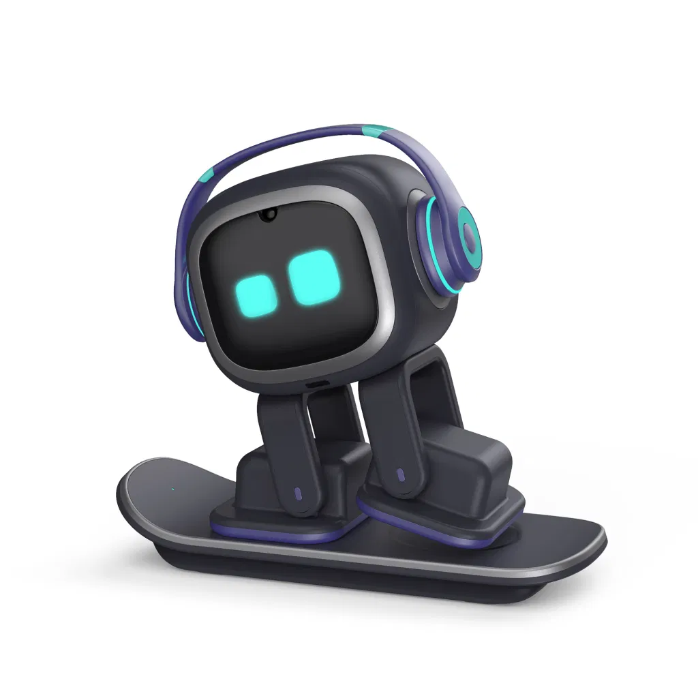
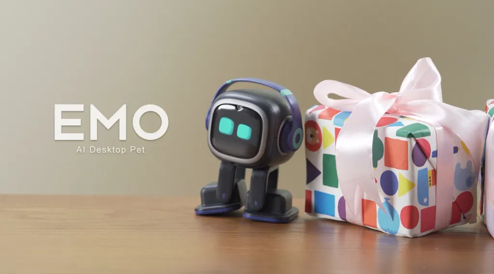
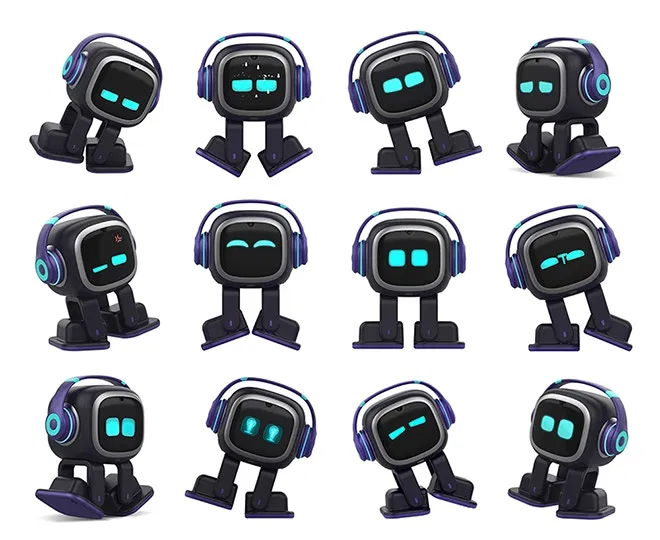
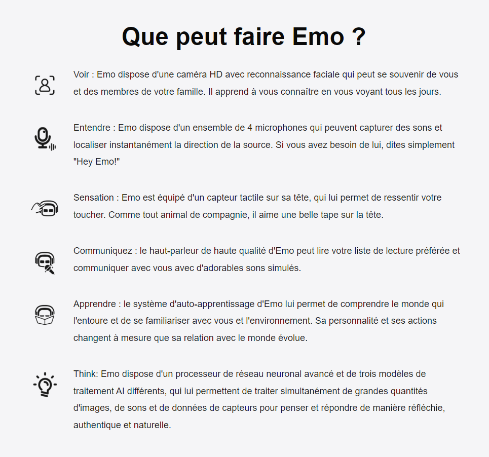

EMO : l'animal de compagnie de bureau
AI le plus cool avec de la personnalité et des idées

Construit avec plusieurs capteurs et des technologies de pointe, Emo est un animal de
compagnie robot IA de bureau cool avec des personnages qui peuvent explorer le monde et
réagir avec plus de 1000 visages et mouvements.

Comme un fidèle compagnon, Emo vous remonte le moral avec de la musique, des mouvements
de danse et des jeux en ligne ! Emo est également une aide précieuse qui vous réveille, allume la
lumière, prend des photos et répond à vos questions, pour un animal de compagnie
vraiment réaliste sur votre bureau !
Indépendamment
cognitif et curieux

Emo est curieux et curieux du monde qui l'entoure. Il se déplace de manière autonome pour explorer
son environnement par lui-même. Il suit les sons, reconnaît les personnes (jusqu'à 10 personnes)
et les objets et navigue de manière experte sur votre bureau sans jamais tomber.
Emo prend ses propres décisions et sa personnalité évolue en fonction de son environnement et
de vos interactions. Si vous essayez d'interrompre ce qu'il fait, il pourrait même s'énerver un peu.
Plus de 1000 expressions et mouvements pour une interaction de type humain

Interagissez avec Emo, et il vous répondra naturellement avec les expressions et les
mouvements. Construit avec le dernier système Emotion Engine, Emo est capable de plus de
1000 expressions et actions. Il montre son humeur et ses sentiments directement à travers des
animations expressives sur son visage et avec son langage corporel. Qu'il soit excité, ennuyé,
déçu, heureux ou triste, Emo réagit à vous avec des émotions et des actions réalistes !
